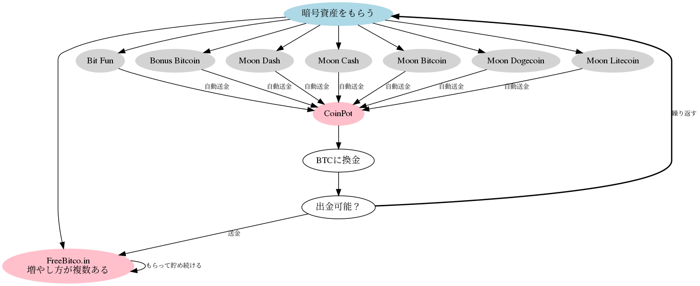

2017年に一気にブレークした仮想通貨（以降、暗号資産と表記）でしたが、2018年にはビットコインをはじめ、ほぼ全ての主要通貨の資産価値を大きく下げました。
しかし、2019年以降は、再び資産価値が大きく上昇すると期待されています。
そうは言っても、自分のお金を投じてまで、暗号資産に投資することに戸惑う人も多いでしょう。
本記事では、数種類のアルトコインと、ビットコイン（Bitcoin）を毎日無料でゲットし、それをより大きく増やす方法を紹介します。最終的にはビットコインとして増やす方法になります。
ポイントサービスなどでコツコツ作業をされている方には、うってつけだと思います。
新規登録、登録後の暗号資産のもらい方も簡単ではありますが、多少慣れが必要です。
暗号資産のフォーセット（Faucet）という仕組みをご存知でしょうか？
「Faucet = 水道の蛇口」という意味で、「蛇口をひねると暗号資産が出てくる」という感じで捉えてもらえればいいと思います。
フォーセットを提供しているサイトの多くは、広告収入で成り立っている場合が多いため、たくさんの広告が表示されているサイトに一定時間滞在させる仕組みがあったり、クリックすると広告サイトが表示されたりします。 後で紹介するFreeBitcoinの場合は、宝くじやスロット、その他広告以外のいくつかの方法で収益をあげているようです。
つまりフォーセットとは、何らかのお手伝いをしてあげる 代わりに、蛇口から暗号資産を少しだけくれるサービスと表現できると思います。
本記事で紹介するフォーセットは、一定時間経過するごとに1日に何回も受け取ることができます。1回毎にもらえる暗号資産の量はフォーセット毎にルールがあり、それぞれ異なります。
さらに継続ボーナス、ミステリーボーナス、紹介ボーナスなど、フォーセットに貢献した人ほど暗号資産を多く受け取る仕組みが提供されています。
FreeBitco.in - Free Bitcoin Wallet, Faucet, Lottery and Dice!
FreeBitcoinは2013年から運営されている老舗フォーセットで、利用者数が半端じゃありません。また信頼度もナンバーワンと言って過言ではありません。
無料でビットコインを手に入れたい人は、チェックしておくべきサイトです。
ここで紹介するFreeBitcoinはCoinPotに参加しているフォーセットと違い、単一のフォーセットでありながら、色々な方法でビットコインを手に入れたり貯めることができます。
後半では、このCoinPotで貯めたビットコインをFreeBitcoinに送り、複利で増やす方法について紹介します。
なお、ここで貯めた資金は、後にトレードボット開発で利用することになります。
CoinPot自体はフォーセットではなく、次で説明する複数のフォーセットで得られた暗号資産を管理するサイトになります。一定量貯まったら取引所に送金したり、ビットコインなどの暗号資産のアドレスに直接送金できます。また、CoinPotで扱っている暗号資産同士の換金ができます。例えば、ライトコインからビットコインに換金するなどです。
CoinPot | Cryptocurrency microwallet
以下７つのフォーセットでもらった暗号資産は上のCoinPotに送られ、集約するので、効率よく仮想通貨を貯められます。多くのフォーセットでは、そのサイト自体に貯まるので、出金できるまでに非常に時間がかかるので、挫折してしまうことも多いのが現実です。
CoinPotに参加している上記のフォーセットでは少量ずつの暗号資産をもらえるだけではく、PotCoinというCoinPot内で使えるポイントのようなものがもらえ、どんどん貯まっていきます。
ある程度貯まったら、これをビットコインなどに換金します。
まずは、次の2つのサイトでアカウントの新規登録をしてください。非常に簡単です。 登録が完了すると、それぞれ確認メールが送られてきますので確認リンクをクリックしてください。
以下のフォーセットの新規登録には、CoinPotの新規登録時に使用したメールアドレスが必要になります。
次の手順で7つのフォーセットに順次登録していきます。
Bit Funをクリックして新規登録を行ってください。
Bonus Bitcoinをクリックして新規登録してください。
Moon Dashをクリックして新規登録してください（動画はありませんが、Moon Cashと同じ操作をします）。
Moon Cashをクリックして新規登録してください。
Moon Bitcoinをクリックして新規登録してください（動画はありませんが、Moon Dogecoin、Moon Litecoinと同じ操作をします）。
Moon Dogecoinをクリックして新規登録してください。
Moon Litecoinをクリックして新規登録してください。
以上で登録作業は完了です。
暗号資産のもらい方（操作）を説明します。基本的には動画を見ていただければ解ると思いますが、ページが完全に読み込まれてから、Claimボタンを
各フォーセットから効率よく暗号資産をもらう方法を伝えます。
どのフォーセットでも、最後にもらった時点から一定時間が経過しないともらえません。またフォーセットによっては、最低待ち時間を経過後、増加率が減りつつも増えるタイプと、全く増えないタイプがあります。さらに24時間以上放置すると、継続ボーナス（Daily Loyalty Bonus）が消滅してしまうフォーセットもあるので注意が必要です。
フォーセット名 | 待ち時間 | 時間経過による増加 | 継続ボーナスの消滅 |
FreeBitco.in | 1時間 | ☓ | 継続ボーナス無し |
Bit Fun | 3分 | ○ | ？ |
Bonus Bitcoin | 15分 | ☓ | ？ |
Moon Dash | 5分 | ○ | 24時間後 |
Moon Cash | 5分 | ○ | 24時間後 |
Moon Bitcoin | 5分 | ○ | 24時間後 |
Moon Dogecoin | 5分 | ○ | 24時間後 |
Moon Litecoin | 5分 | ○ | 24時間後 |
準備中
最低待ち時間を経過後にMoon系フォーセットには、継続ボーナス（Daily Loyalty Bonus）以外にもミステリーボーナス（Mystery Bonus）や紹介ボーナスが用意されています。
フォーセット中最も特徴的であり、かつ最も増やせるのがこのFreeBitco.inです。
準備中

上図はフォーセットから暗号資産をもらって、増やしていく基本作業の流れになります（右クリックから他のタブで表示してください）。
全てのフォーセットから少額ずつ暗号資産をもらい、それを貯めていき、CoinPotから出金できるだけの量が貯まったら、ビットコイン（BTC）に換金して、FreeBitco.inに送金します。何故こんなことをするかは後述します。